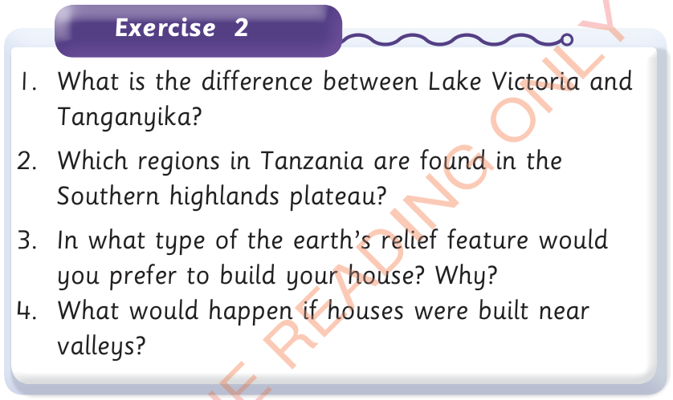

Exercise 2
1. What is the difference between Lake Victoria and Tanganyika?
2. Which regions in Tanzania are found in the Southern highlands plateau?
3. In what type of the earth’s relief feature would you prefer to build your house? Why?
4. What would happen if houses were built near valleys?